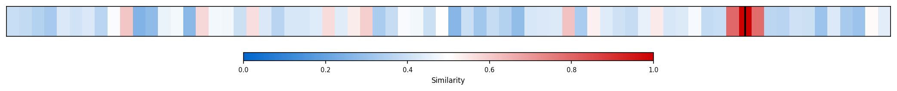
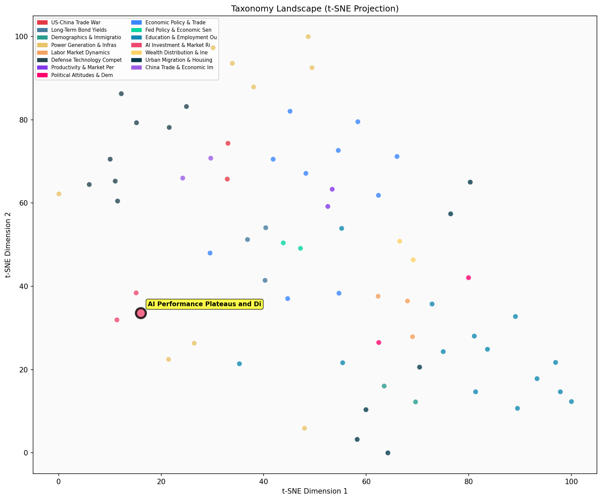

Description
This subcluster examines emerging concerns about diminishing returns and performance plateaus in AI development, contrasting sharply with the investment surge focus of its sibling cluster. Articles analyze whether AI scaling laws are breaking down, citing specific model releases like Google's Gemini 3 and GPT-5 that underwhelmed expectations despite massive resource investments. The content draws from technology analysts like Kedrosky, investment firms like Bridgewater, and academic institutions like MIT to evaluate whether current AI models have hit bounded performance ceilings. Unlike the sibling cluster's emphasis on capital expenditure trends, this subcluster focuses on technical limitations, data constraints, and the growing gap between investment inputs and performance outputs in AI systems.
Similarity to All 70 Subclusters
Each cell represents a subcluster. Color intensity shows similarity (blue=low, red=high). Black line marks current subcluster position.
Relationship to Primary Clusters
Average similarity to each of the 15 primary clusters. Larger area = stronger relationship to that cluster.

Taxonomy Landscape
All 70 subclusters positioned by similarity (t-SNE). Current subcluster highlighted with label. Click to enlarge.
Network Connections
Current subcluster at center, connected to related subclusters. Line thickness = similarity strength.
Most Representative Articles
-
1. The rate of performance improvement of large language models may be slowing, as models face both dat
-
2. Following tepid reactions to the release of GTP-5, Joe Wang observes, "It is looking more like compa
-
3. Boston Consulting Group consultants using AI finished 12.2% more tasks on average, completed tasks 2
-
4. Chinese company DeepSeek’s new AI model rivals Claude 3.5 Sonnet but cost just $5.6M to train—100x c
-
5. Current AI models are “impressive but bounded.” After vastly underestimating the limits of scaling,
Edge Cases (Boundary Articles)
-
1. Torsten Sløk shows that banks are playing a smaller role as a provider of credit. Bank lending decliThis article is clearly misclassified as it discusses banking sector lending trends and corporate credit markets, which has no connection to AI performance plateaus or diminishing returns in artificial intelligence development. The article belongs in the "Corporate Credit and Banking Sector Lending" cluster, as it directly analyzes how banks' role in providing credit to non-financial corporations has declined over time.
-
2. Technology newsletter publisher @benthompson tested @OpenAI’s ChatGPT on his daughter’s homework assThis article is borderline for the "AI Performance Plateaus and Diminishing Returns" cluster because while it demonstrates a clear AI failure (ChatGPT providing confidently wrong answers), it presents an isolated anecdotal example rather than systematic evidence of broader performance plateaus or diminishing returns in AI development. The content focuses more on AI accuracy and reliability issues in a specific use case rather than analyzing trends in AI performance improvements leveling off or facing developmental limitations.
-
3. In a randomized clinical trial of diagnostic reasoning, physicians using conventional resources scorThis article is borderline because while it shows GPT-4 achieving strong absolute performance in medical diagnosis, it doesn't demonstrate the performance plateaus or diminishing returns that define this cluster - instead, it shows clear performance gains over conventional methods. The article would fit better in "Management & Performance Analysis" since it presents concrete performance metrics and comparative analysis of AI implementation in a professional setting.
Original Dendrogram